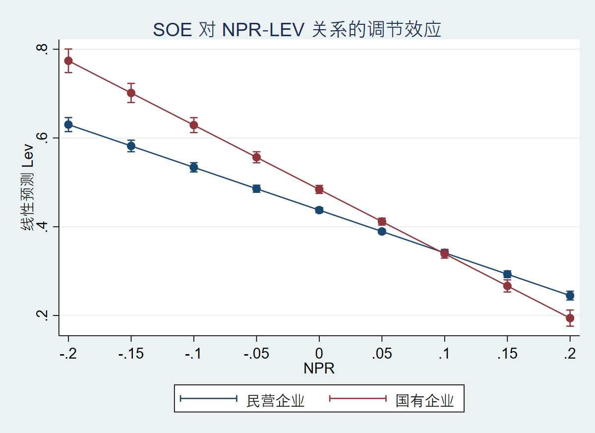

| M1 TWFE | M1 IFE | M2 SOE | M2 Non-SOE | M3 Interact | M5 Small | M5 Large | |
|---|---|---|---|---|---|---|---|
| b/t | b/t | b/t | b/t | b/t | b/t | b/t | |
| npr | -.6174595*** | -.5689169*** | -.7827861*** | -.4993219*** | -.9635639*** | -.4525101*** | -.6957746*** |
| -11.78511 | -11.13173 | -13.67341 | -13.41596 | -32.05503 | -11.35799 | -14.33675 | |
| m2_growth | 0 | ||||||
| . | |||||||
| size | .0789159*** | .0783116*** | .0832324*** | .0676743*** | .0625854*** | .1019116*** | .0794586*** |
| 17.78524 | 17.69826 | 12.06624 | 11.17303 | 31.4979 | 11.9811 | 13.78597 | |
| tang | .0799561** | .0746603** | .0519339 | .1105629** | .0472541* | .1059767** | .0546226* |
| 3.562561 | 3.311494 | 1.64938 | 3.701661 | 2.389169 | 3.299812 | 2.307237 | |
| growth | .0220199* | .0218609* | .0164261* | .0299357** | .0524727*** | .0232722* | .0114296 |
| 2.562718 | 2.582579 | 2.288568 | 3.230715 | 14.16404 | 2.273574 | 1.939476 | |
| ndts | .5276494* | .6064854** | -.5156508 | .848638** | .2280954 | 1.29224*** | -.1240466 |
| 2.67668 | 3.217303 | -1.660614 | 3.972197 | 1.291145 | 4.155145 | -.5243715 | |
| 0.soe | 0 | 0 | |||||
| . | . | ||||||
| 1.soe | .0311541** | .0465352*** | |||||
| 3.522946 | 8.230127 | ||||||
| 0.soe#c.npr | 0 | 0 | |||||
| . | . | ||||||
| 1.soe#c.npr | -.201159*** | -.48617*** | |||||
| -4.721361 | -8.232495 | ||||||
| _cons | -1.354592*** | -1.351115*** | -1.396558*** | -1.137589*** | -.9806875*** | -1.872998*** | -1.34007*** |
| -13.43329 | -13.43782 | -8.599324 | -8.411796 | -22.03662 | -10.27002 | -9.917139 | |
| N | 38358 | 37001 | 13952 | 24371 | 38384 | 18978 | 19042 |
4 实证结果
本章报告资本结构模型的估计结果，依次讨论基准模型、交互效应、分组回归，并检验产权性质和宏观变量的调节作用。
4.1 基准模型：双向固定效应 (TWFE)
模型 M1 采用公司固定效应和年度固定效应，并聚类标准误于公司和年度层面。Table 4.1 汇总了所有核心回归结果。
模型 M1（第1列） 为基准 TWFE 模型。在控制企业规模、有形资产比例、成长性和非债务税盾后，盈利能力（NPR）的系数显著为负（p < 0.01），直接支持 优序融资理论：盈利能力越强，内源资金越多，企业对外部债务的需求越低。
模型 M1 IFE（第2列） 进一步加入货币供应量增速（m2_growth）及产权性质交互项。NPR 的负系数依然高度显著，且交互项 NPR × SOE 显著为正，表明国有企业中盈利对杠杆的负向影响被部分抵消。这说明，即便控制宏观货币环境，盈利能力对杠杆的抑制作用依然稳健，但产权的调节作用不可忽视。
4.2 交互效应：产权性质如何调节？
模型 M3 在全样本中明确引入 NPR × SOE 交互项。如 Table 4.1 第5列所示，交互项系数显著为正（相对于民营企业的基准负效应），意味着国有企业的盈利‑杠杆负相关明显弱于民营企业。图 Figure 4.1 直观展示了这一调节效应：随着 NPR 增加，两类企业的预测杠杆率均下降，但民营企业的下降斜率更陡峭。

这一发现与预算软约束和国有企业政策性负担的观点一致：国企在盈利下滑时可能依然能获得信贷支持，从而偏离优序融资的纯市场逻辑。
4.3 分组回归：国有 vs 民营
将样本按产权性质分为两组后分别估计 M1 模型（Table 4.1 第3、4列），两组中 NPR 均保持显著为负。国有组 NPR 系数的绝对值大于民营组，但这应谨慎解释：分组均值差异未必反映交互效应的方向，因为后者控制了其他协变量后的边际影响（如交互项所示，国有企业的边际负相关更弱）。综合来看，产权性质的调节作用通过交互项得到了更严格的检验。
4.4 宏观货币环境的作用
对比 M1 TWFE 与 M1 IFE 的 NPR 系数可以发现，引入 m2_growth 后 NPR 系数的绝对值略有下降，且模型解释力（Within R²）轻微提高。这提示 宏观货币环境是资本结构研究中的遗漏变量：若忽略货币政策的宽松或紧缩，可能高估盈利能力对杠杆率的独立影响。交互固定效应模型（IFE）通过吸收不可观测的宏观冲击，提供了一致性估计。
4.5 小结
- NPR 与 Lev 显著负相关，中国上市公司整体更符合优序融资理论。
- 产权性质显著调节该关系：国有企业中盈利对杠杆的负效应更弱。
- 宏观货币变量是重要的控制因素，遗漏会导致估计偏误。